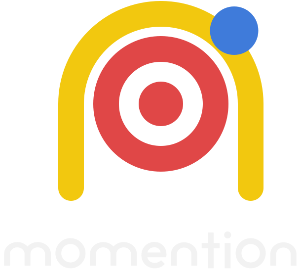
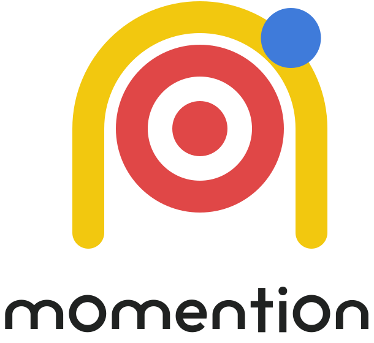
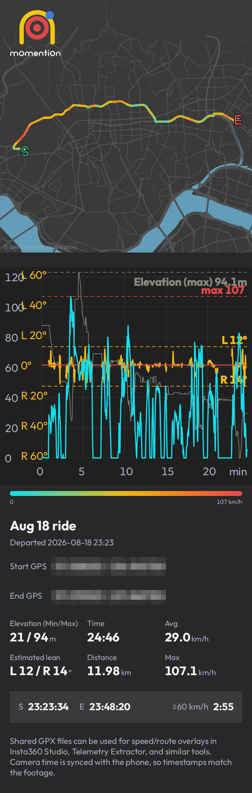

Grabación activada por velocidad
Configura las velocidades de inicio y parada. Tu cámara de acción sigue tu recorrido.
Configura las velocidades de inicio y parada.
mOmentiOn controla tu cámara de acción y registra tu recorrido.


A Moment in Motion
Configura las velocidades de inicio y parada. Tu cámara de acción sigue tu recorrido.
Recuerda los ajustes de tu cámara y se reconecta tras una interrupción.
Guarda juntas la ruta y la velocidad para revisarlas con detalle después.
Sigue el mapa y observa cómo cambia tu velocidad a lo largo de la ruta.
Reproduce varias rutas y compara velocidad, tiempo y altitud.
Crea imágenes de resumen y vídeos verticales con mapa de calor y gráfico.
Resúmenes de rutas y vídeos de reproducción reales creados con mOmentiOn.

Ruta, velocidad, altitud y resumen del recorrido de un vistazo.
Reproduce la ruta y sigue el gráfico a medida que avanza el recorrido.
Reproduce varios recorridos a la vez para ver en qué se diferencian.


Muestra el logotipo de la cámara seleccionada. Tócalo durante la conexión para cambiar de marca.
Muestra la recepción GPS. Tócalo para activar o desactivar el control de velocidad sin desconectar la cámara.
Los eventos de conexión y grabación se registran en inglés, los más recientes arriba.
Usa el botón flotante para controlar la app.
Verde: cámara conectada y lista para grabar. Rojo: grabación en curso. También admite grabación manual.
El número junto al punto rojo es la velocidad de inicio configurada; el número junto al punto verde es la velocidad de parada.
El punto amarillo sigue la dirección de la gravedad del teléfono.
Inicia o reintenta una conexión. Tócalo de nuevo durante la conexión para cancelarla.
Detiene todos los servicios y cierra la app de inmediato.
Configura la conexión de la cámara, los umbrales de grabación y el funcionamiento de la app.
Revisa, compara y comparte tus recorridos guardados.
Abre los registros guardados para revisar la actividad anterior.
GET mOmentiOn
Se abrirá tu app de correo. Escribe el correo de la cuenta que usarás para la prueba y envíalo para completar la inscripción.